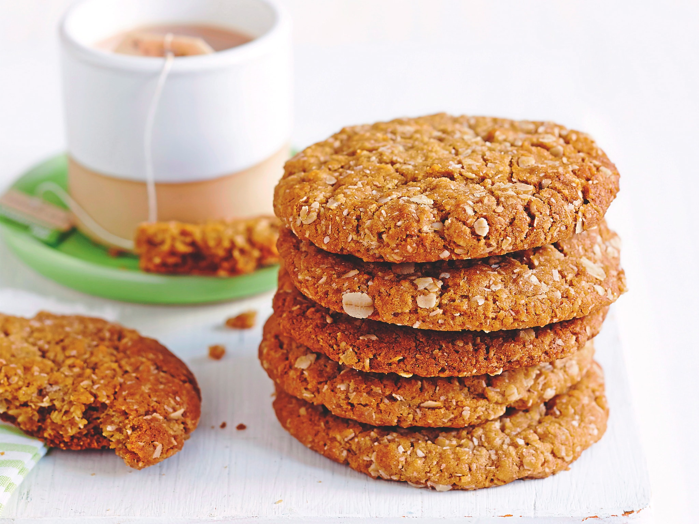
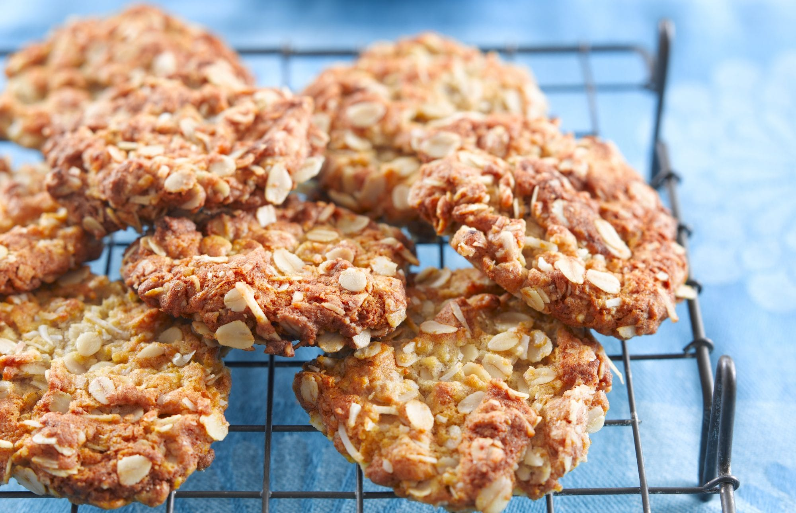
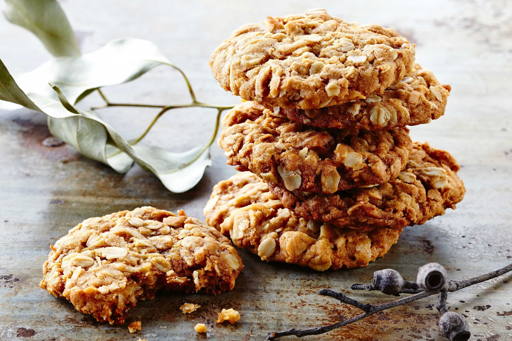
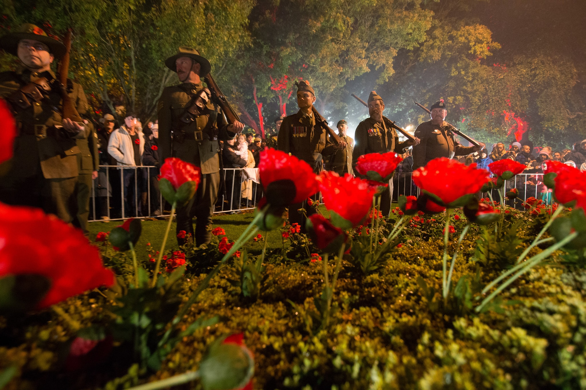
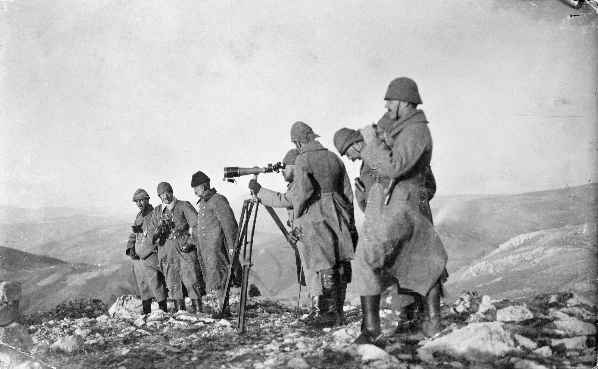
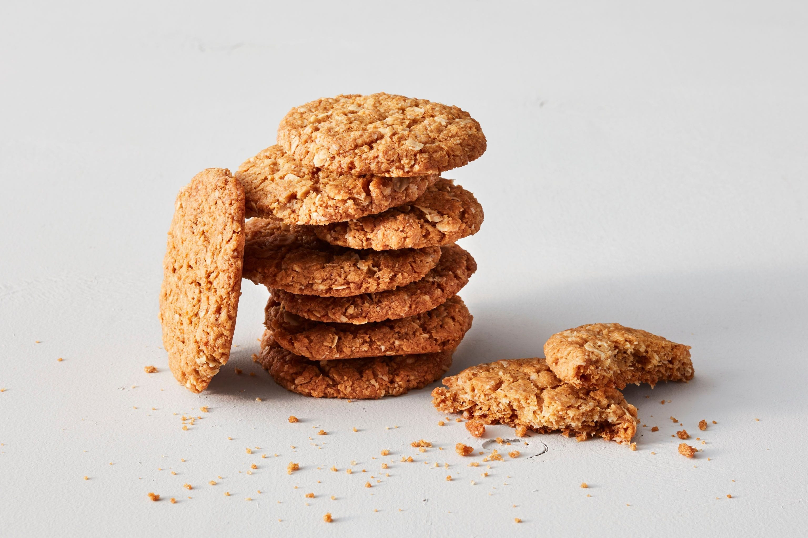
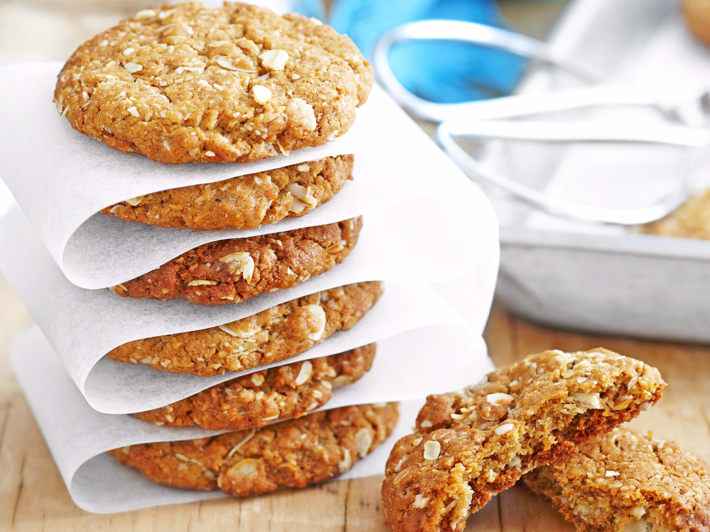

Acknowledgements
Special thanks to the following websites where the images for this project were obtained. I in no way, shape or form, own any of these images - copyright belongs to the respective owners.

Marie Conde, A. (2008). Anzac biscuits.
URL

Publisher BAUER MEDIA PTY LIMITED. (Publish Date Unknown). Anzac biscuits.
URL 
Healthy Food Guide. (2018). Anzac biscuits.
URL 
Kerrie Ray. (Date Unknown). Anzac biscuits.
URL 
Rica J. (2016). What You Should Know About ANZAC Day.
URL 
Brandnet Pty Ltd. (2018). ANZAC Q&A - WHO DID THE ANZACS FIGHT AT GALLIPOLI?
URL 
Amanda Laugesen. (2015). Rediscovering words from the Great War
URL

Warren Mendes. (Date Unknown). THE SLIGHTLY CHEWY, EASY ANZAC BISCUIT RECIPE YOU CAN MAKE NOW.
URL 
NewsLifeMedia. (Date Unknown). Traditional Anzac biscuits.
URL

BAUER MEDIA PTY LIMITED. (Date Unknown). True blue Anzac biscuits.
URL